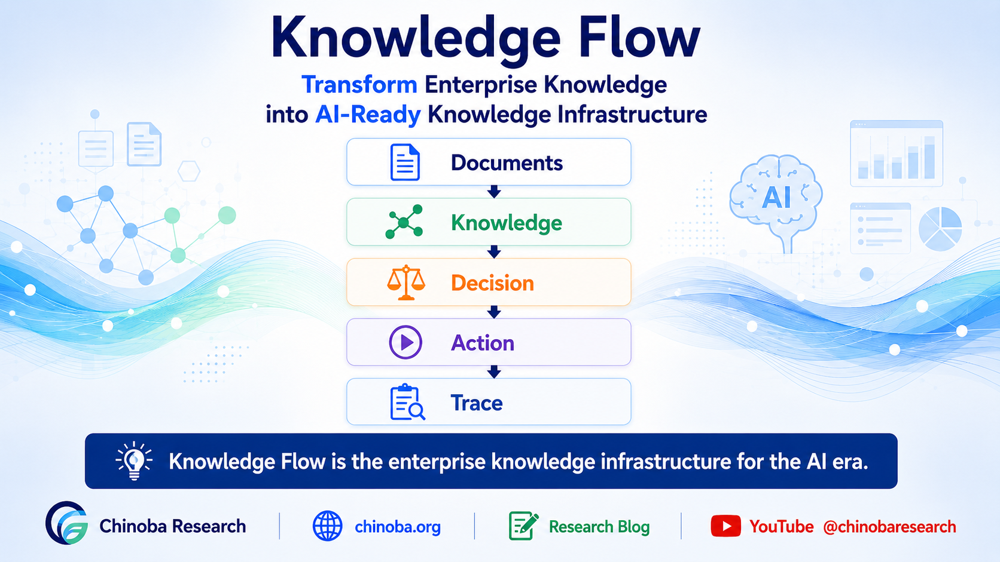
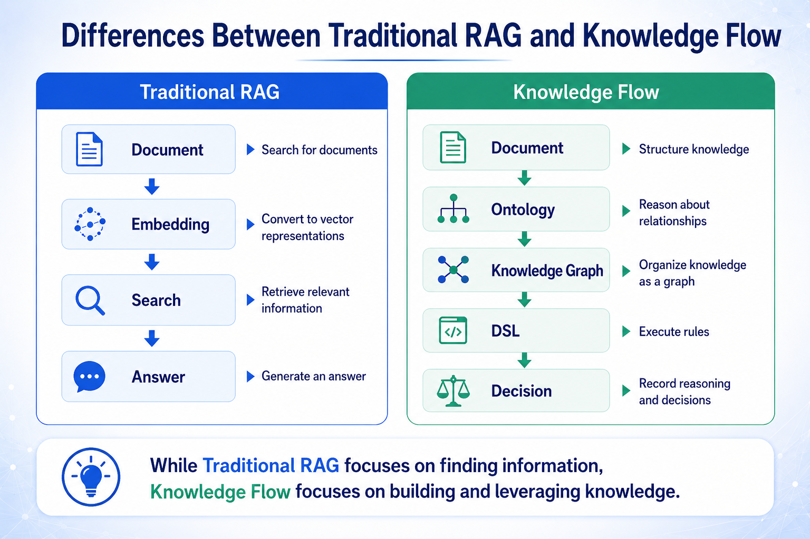
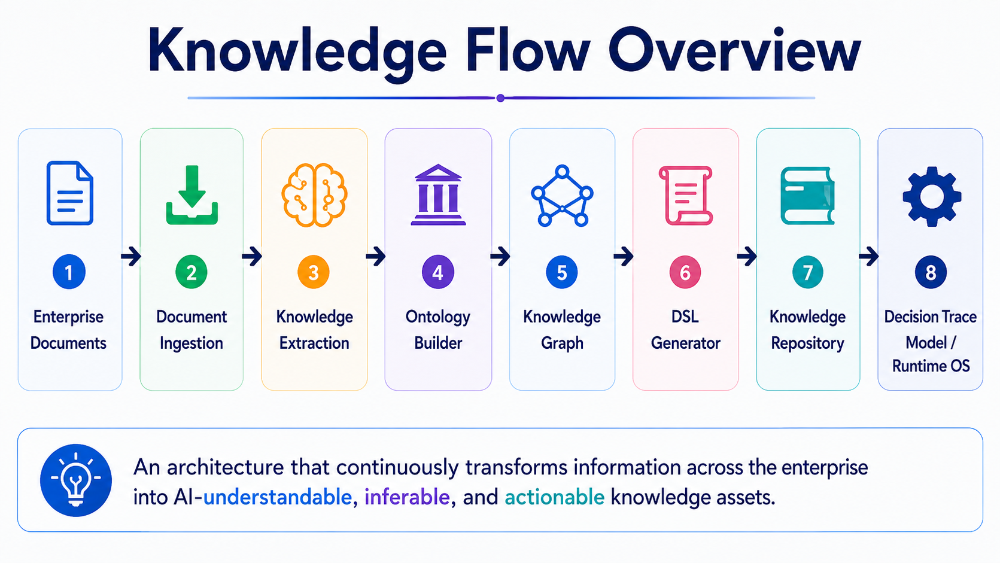
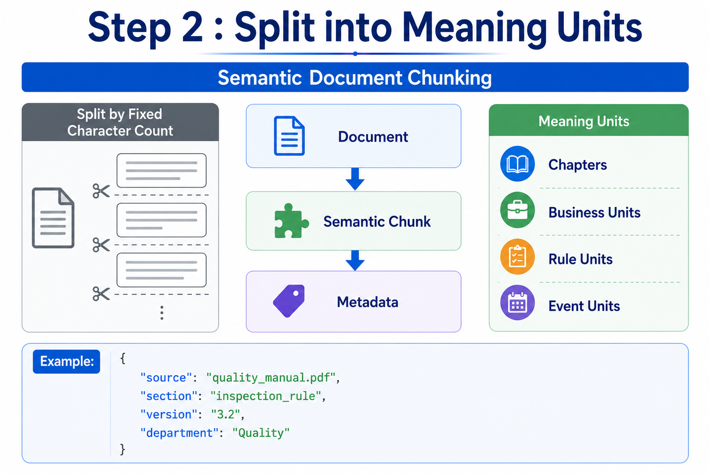
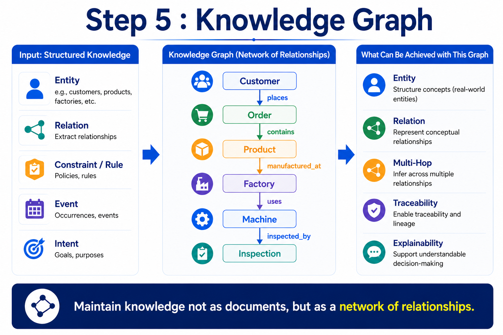
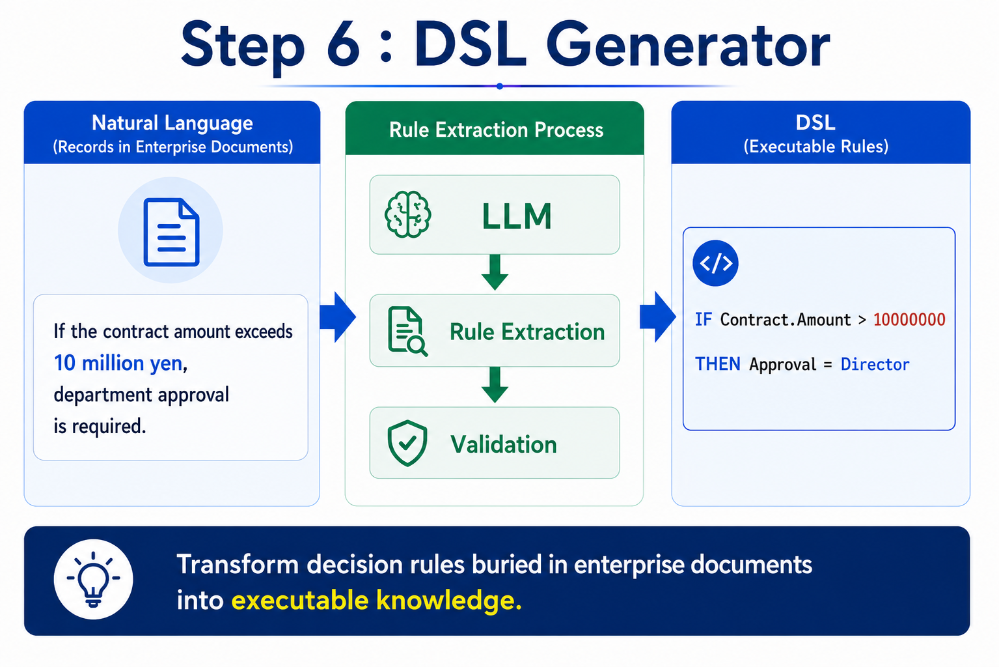
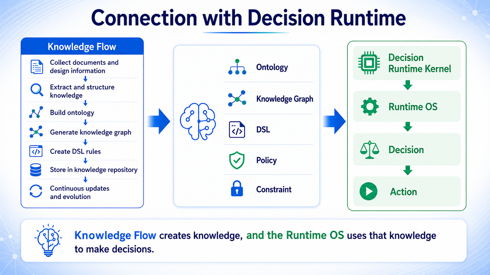

Enterprises already store more information than any team can read. Storing it and searching it are not the same as an AI understanding it. An AI that can read a document is not yet an AI that can decide.
Documents, PDFs, spreadsheets, design specifications, chat, email, and databases hold enormous amounts of enterprise knowledge — distributed across formats, departments, and systems that were never designed to agree with one another. Knowledge Flow is the discipline of converting that distributed information into Knowledge Assets — Ontology, Knowledge Graph, DSL, Policy, and Constraint — that carry meaning, source, validity, and authority forward into a decision. Its spine is one path: Document → Knowledge → Decision → Trace → Learning. In the Chinoba architecture, Knowledge Flow is the knowledge foundation beneath the Decision Trace Model, the Decision Runtime Kernel, and the Runtime OS.

The practical guide behind this page's architecture. It works through how document ingestion, semantic chunking, knowledge extraction, Ontology resolution, Knowledge Graph construction, DSL formalization, human review, and versioned repositories combine into one pipeline — one that delivers knowledge the Decision Runtime Kernel and Runtime OS can actually decide on.
View on Amazon → Kindle · Masao WatanabeThe practical guide above leads this line of inquiry. Below it are the neighboring Chinoba books, videos, and essays on Ontology, Knowledge Graph, Semantic Digital Twin, Decision Trace, and Runtime AI Governance that this page draws on.
Neighboring practical guides on the knowledge, semantic, and runtime layers this page connects.
Visual introductions to Knowledge Flow, Knowledge Infrastructure, and the runtime it feeds.
Long-form essays behind this page's argument, on knowledge infrastructure, retrieval, and runtime governance.
Retrieval-augmented generation is genuinely useful for surfacing a relevant passage. It was never built to settle whether that passage still holds, for which organization, product, region, or situation it applies, or what exception overrides it. A fluent answer is not the same thing as a usable enterprise decision.
RAG can search documents, summarize them, and answer a question in fluent prose. It cannot, on its own:
A document being searchable says nothing about whether the knowledge inside it is still valid, or which organization, product line, region, or condition it is allowed to govern.
Two distinct gaps stand between a fluent answer and a correct enterprise decision:
AI can answer.
It cannot yet decide.
Closing that distance
is what Knowledge Flow is for.
Knowledge Flow does not compete with retrieval — it gives retrieval something worth trusting. Ontology resolves company-specific terms to one canonical meaning, the Knowledge Graph holds the relationships a single passage cannot express, and DSL and Policy make the applicable rule explicit rather than implied. Retrieval still finds the candidate; Knowledge Flow is what turns the candidate into knowledge a decision can be built on.

Knowledge Flow is not a single transformation but ten stages, each responsible for preserving something specific — meaning, source, validity, accountability, or reproducibility — as information moves from a raw document toward a decision a Runtime can act on.
None of these ten stages is only data processing. Each one exists to keep a specific property intact — meaning, source, current validity, who is accountable, or whether the result can be reproduced later — as knowledge moves from a document toward a decision.

Turning a document into a Knowledge Asset is not one step. It runs from how a source is captured, through how it is split, to how confidently anything extracted from it can be trusted before a human ever signs off on it.
Connectors pull in documents, conversations, and operational data while carrying forward what matters beyond the text itself:
Semantic chunking then splits content along headings, procedures, rules, exceptions, and tables — the units a reader would actually recognize as meaningful — rather than cutting text at a fixed character count that can sever a rule from its exception.
An LLM extracts entities, relations, constraints, events, intents, and policy candidates from a chunk. None of this is treated as settled:
Source → Evidence → Claim → Knowledge
A chain like this is what lets an organization trace any piece of knowledge a decision relied on back to the document, message, or event it actually came from.

Extraction produces fragments. Ontology and the Knowledge Graph are what turn those fragments into one coherent, navigable structure — the layer of meaning and relationship that Knowledge Flow actually delivers to a decision.
An Ontology defines the organization's own Concepts, Entities, Relations, Attributes, Units, Hierarchies, and Constraints — not a generic vocabulary borrowed from outside it. It also governs how that vocabulary changes over time:
The Knowledge Graph connects documents, entities, relations, events, rules, and constraints across every source that touched them — the context a single retrieved passage cannot carry on its own. Graph RAG retrieves against that structure, not against embeddings alone:
A knowledge graph is not a bigger index.
It is the path a decision walks
across sources, toward a rule
that actually applies.

A regulation or procedure written in natural language cannot be evaluated consistently — its conditions, exceptions, priority, and authority stay implicit. A DSL makes those elements explicit enough for a Runtime to evaluate them the same way every time.
A DSL is not a direct execution command. It is an input the Decision Runtime evaluates together with Policy, Constraint, Boundary, Risk, and Human Authority — formalizing:
Every element here ties the rule back to who is responsible for it, what document it came from, and which version is currently in force.
A rule is not trusted the moment it is generated. Before publication it passes through:
A DSL is not the decision.
It is the condition
under which a Runtime
is allowed to reach one.

Knowledge Flow does not end once an asset is published. Every Knowledge Asset needs an owner and a lifecycle, and every change to it needs to reach the rest of the system in an order that stays verifiable.
Beyond its content, each asset carries:
Change arrives from many directions — a new document, an ECN, a revised policy, a conversation, or an event on the floor. Each has to propagate through Knowledge Candidate, Ontology, Knowledge Graph, DSL, and Repository, in an order that keeps the system consistent rather than momentarily contradictory.
For anything that matters — a new extraction, a rule change, a concept change — a human can:
And once a decision is made, its Decision Trace and outcome return into the pipeline — improving the knowledge, the rules, and their quality the next time the same situation occurs.
Knowledge is not created by AI alone.
It is co-created by humans and AI,
reviewed, approved, or overridden,
and improved by what happens next.
Knowledge Flow and the Runtime OS divide the work cleanly. One builds and governs knowledge; the other resolves a live situation against it and decides what may happen next.
Knowledge Flow is responsible for acquiring, structuring, validating, governing, and distributing knowledge. The Runtime OS is responsible for something different — resolving the current Context and evaluating Ontology, Knowledge Graph, DSL, Policy, Boundary, Risk, and Human Authority against it, live, at the moment a decision is needed.
Neither replaces the other. Knowledge Flow without a Runtime is an archive; a Runtime without Knowledge Flow is a model guessing at rules it was never given.
The kernel connects, in sequence:
The LLM is not the final authority.
Execution permission and the reasoning
behind it stay separate — and on failure,
the system falls to the safe side,
traceable back to the source document.

In each domain below, what decides the outcome is not how fluent the underlying model sounds. It is whether the knowledge behind an answer carries the right meaning, source, validity, authority, Decision Trace, and human review for that domain.
Design standards, quality criteria, ECNs, CAPA, and equipment maintenance rules all change on their own schedules. What matters is not whether an AI can summarize a spec, but whether it can trace a current rule back to the ECN that changed it, and whether a CAPA-derived constraint reaches the shop floor as a validated rule rather than a paraphrase.
Credit, contract, risk, and compliance decisions depend on rules that are explainable and separable from the score that feeds them. A credit judgment is only as good as its ability to show which policy, which contract clause, and which risk limit it applied — and who is authorized to override it.
Clinical guidelines are not absolute commands, and AI is not the final diagnostician. Contraindications, patient context, and evidence level all have to be tracked with their own provenance, and a human retains authority over anything the system proposes — especially where guidelines conflict.
SharePoint, Teams, Slack, and wikis hold both formal and informal knowledge side by side, and they disagree with each other constantly. Turning a Slack thread into a Knowledge Candidate, detecting when it contradicts a formal document, and keeping access control inherited from the source — not flattened — matters more than making search feel faster.
Knowledge Flow is not a way to collect more information. It is how distributed, siloed information becomes a Knowledge Asset — one that carries meaning, source, validity, scope, responsibility, and the ability to be updated. That is the condition on which AI and humans can make a better decision together, not merely a faster one. Chinoba studies how Ontology, Knowledge Graph, DSL, Decision Trace, the Decision Runtime Kernel, and the Runtime OS connect, so that knowledge keeps circulating through decision, execution, and learning — rather than stopping at an answer.
{kind=link}
{kind=link}
{kind=link}
{kind=link}
{kind=link}
{kind=link}
{kind=link}